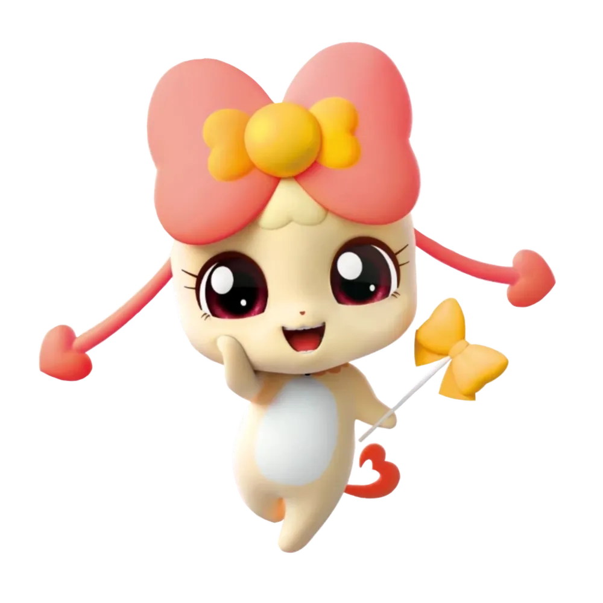

당신의 티니핑 캐릭터는...
ISFJ
아잉핑
헌신적인 보호자
1. 조용하고 따뜻하며 헌신적임
• 겉으로는 조용하지만, 가까운 사람들에게 깊은 애정을 가지고
헌신적으로 돕습니다.
• 배려심이 많고, 누군가 힘들어하면 말없이 도와주는 경우가
많아요.
2. 책임감 강하고 성실함
• 맡은 일은 끝까지 해내려는 책임감이 매우 강합니다.
• 조직 내에서 신뢰받는 조력자 역할을 자주 맡아요.
3.전통과 규칙을 중시
• 변화를 좋아하기보다는 익숙하고 안정적인 방식을
선호합니다.
• 전통, 예의,도리를 중요하게 생각합니다.
4.세심하고 관찰력이 뛰어남
• 사람의 감정과 분위기에 민감하게 반응하며, 작은 변화도 잘
포착합니다.
• 주변 사람들의 필요를 잘 캐치하고, 말하지 않아도 알아서
챙겨주는 스타일입니다.
• 내향적이지만 인간관계가 깊음 처음엔 낯을 가리지만, 일단
친해지면 진심을 다해 관계를 유지합니다.
• 넓은 인간관계보다는 소수의 깊은 관계를 선호합니다.
💡 ISFJ 주의할 점
• 자신의 감정을 억누르고 남을 먼저 생각하다가 번아웃 되기
쉬움
• 변화를 너무 두려워하지 않도록 유연성을 기르는 것이 필요
나랑 잘 맞는 티니핑
나랑 잘 안맞는 티니핑